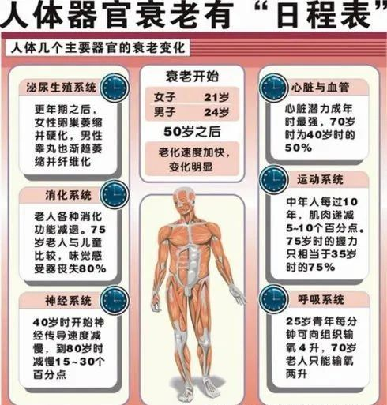
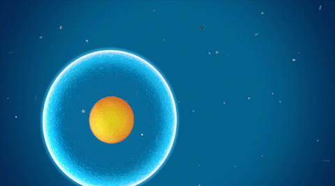
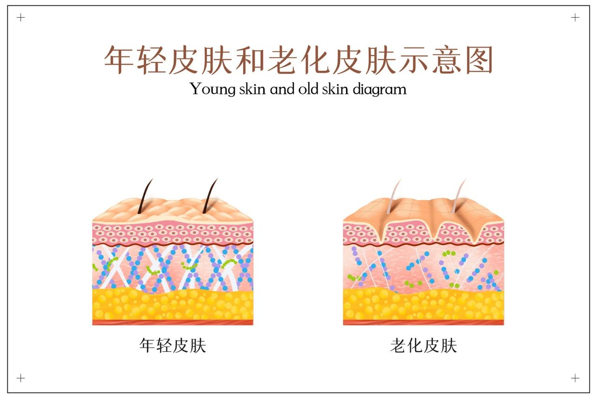
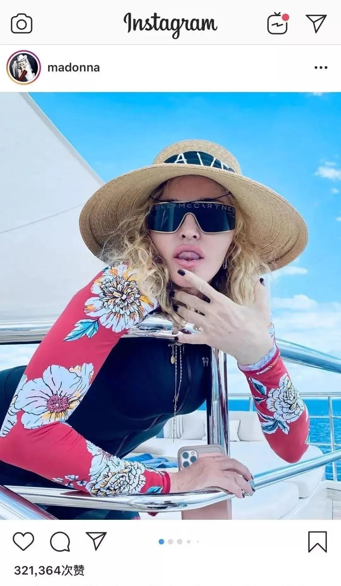
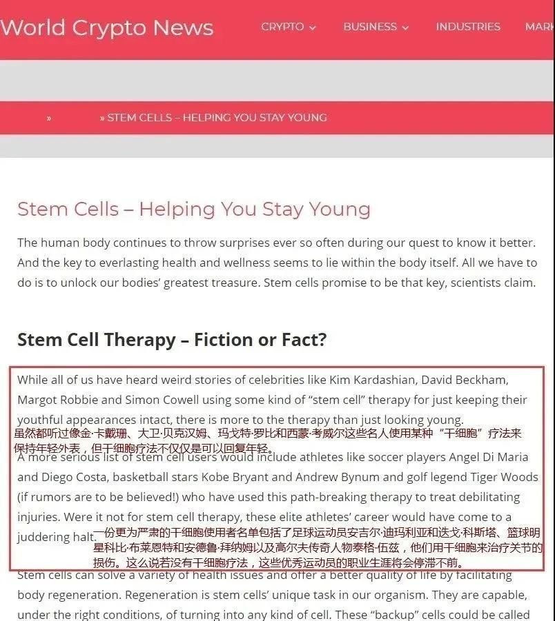
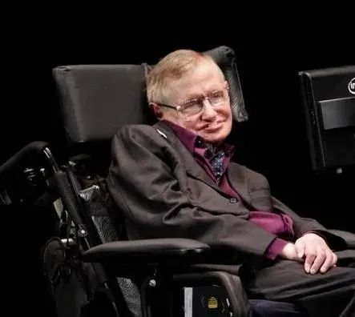
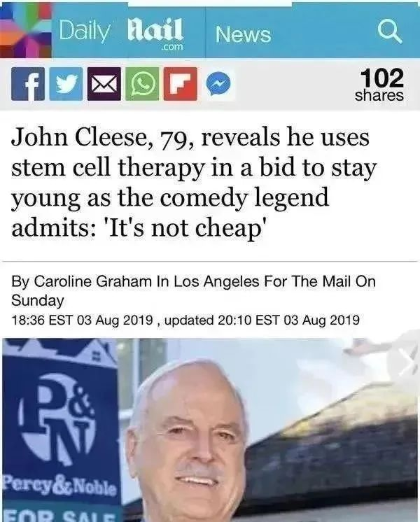

年后肝"负重"？百年春护肝美颜能量抗衰老针——给肝"松绑"，让脸发光！
2026-03-01

About Us
关于百年春



干细胞技术抗衰老不像其他的药物治疗，只能在短期内，或者用药期间才能够缓解部分衰老或者亚健康的状态，它是通过提高整体细胞的再生能力，让细胞再生修复异常组织器官，恢复其正常的生理功能，从根本上延缓衰老，延长寿命，从而达到抗衰老的效果。
50岁的钟丽缇在《乘风破浪的姐姐》大放光彩
其实明星、名人使用干细胞进行疾病治疗和抗衰保健已不再少见。干细胞为越来越多的公众带来福音，在各种疾病治疗和抗衰老方面取得有效成果。今天，我们推出部分明星使用干细胞抗衰老的一些经典案例，与大家分享。
01.
港星钟丽缇：“干细胞太神奇”
该采访已是她接受干细胞治疗的第二天，她自信道：“我相信干细胞会有促进作用，会让我恢复活力......看起来更年轻。”
02.
麦当娜：61岁的不老秘诀


03.
柯克船长：88岁也能逆转时光
“今天我接受了来自ProGenaCell细胞诊所的干细胞，”Shatner发推文说。“我的朋友Mathi Senapathi医生给我静脉注射细胞。我可以倒转’时钟‘吗？我会继续跟你分享。”

纪录片《霍金：未来，干细胞可攻克一切疾病！》
04.
约翰·克里斯：保持年轻完全取决于干细胞
